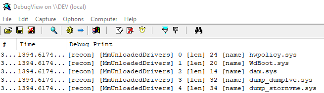
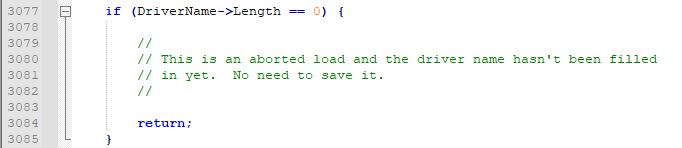
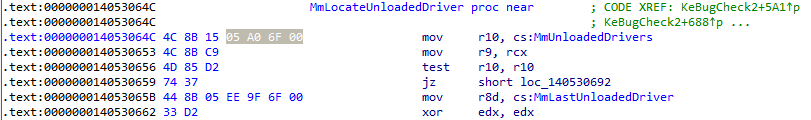
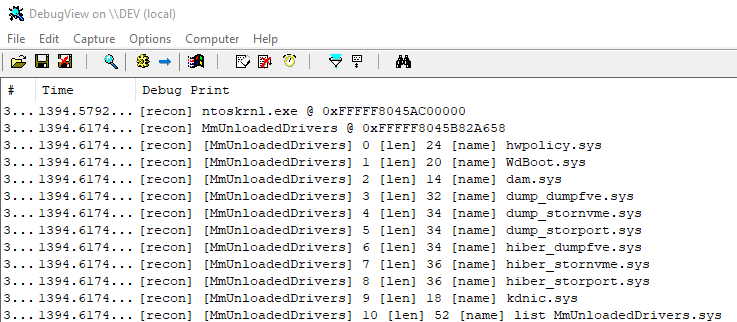
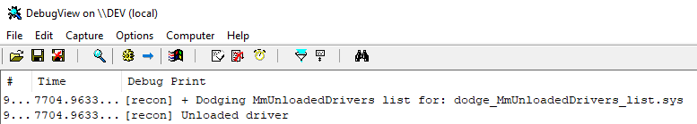
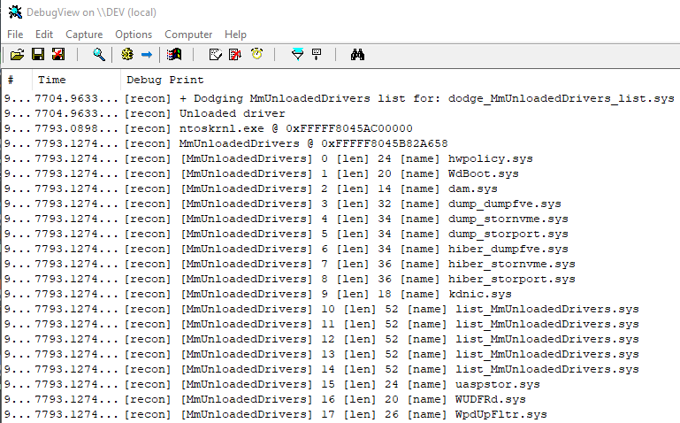

# MmUnloadedDrivers
•
https://github.com/dx9hk/MmUnloadedDrivers - Source which walks loaded module list. Doesn't need this driver's DriverObject, just any
•
https://github.com/vectless/kernelmode-driver/blob/0ab324dd7dcf519697472cb56a5c23f0602abc6e/kernelmode/clear.cpp#L283 - Source (a janky one at that)
•
https://www.unknowncheats.me/forum/anti-cheat-bypass/231400-clearing-mmunloadeddrivers-mmlastunloadeddriver.html - Useful thread
•
https://github.com/BadPlayer555/TraceCleaner - Source
•
https://www.unknowncheats.me/forum/anti-cheat-bypass/302508-deleting-entry-mmunloadeddrivers-cleaning.html - More comprehensive full example. Should look at this really.
MmUnloadedDrivers stores a list of unloaded drivers.
MiRememberUnloadedDriver is the function which remembers drivers.
This list of unloaded drivers can be a detection mechanism which reveals your driver's existence.
Because of how
MiRememberUnloadedDriver is written,
your driver won't be added to the list if the driver name's length is 0.
•
https://www.unknowncheats.me/forum/2210153-post35.html•
https://github.com/scdeny/os-design/blob/e47d942602a0d7c56d269481d859fecf267a565a/ntos/mm/sysload.c#L2771## Locating MmUnloadedDrivers struct
The signature for MmUnloadedDrivers is
4C 8B ? ? ? ? ? 4C 8B C9 4D 85 ? 74As of Windows 10 x64 2004,
a RIP relative address to the struct can be be found in MmLocatedUnloadedDriver in ntoskrnl.exe:
## Recon Demo
### Demo
Installed the driver with OSR Driver Loader and ran DebugView to capture the output.
### Code
#include <ntddk.h>
#include <windef.h>
#include <ntimage.h>
#include "nt.h"
//#include <ntifs.h>
#define Dbg(...) DbgPrintEx( DPFLTR_SYSTEM_ID, DPFLTR_ERROR_LEVEL, "[recon] " __VA_ARGS__ )
#define MI_UNLOADED_DRIVERS 50
typedef struct _UNLOADED_DRIVERS {
UNICODE_STRING Name;
PVOID StartAddress;
PVOID EndAddress;
LARGE_INTEGER CurrentTime;
} UNLOADED_DRIVERS, *PUNLOADED_DRIVERS;
// ---------------------------------------------------------
// Util
// ---------------------------------------------------------
PVOID FindModuleBase(char* module_name)
{
PVOID module_base = NULL;
ULONG buffer_size = 8;
PVOID info_buffer = ExAllocatePool2(POOL_FLAG_NON_PAGED, buffer_size, '1luL');
// Enumerate the loaded modules on the system
ULONG return_len = 0;
NTSTATUS status = ZwQuerySystemInformation(
SystemModuleInformation,
info_buffer,
buffer_size,
&return_len
);
if (status == STATUS_INFO_LENGTH_MISMATCH)
{
// Resize buffer to store returned information
// and try again
ExFreePool(info_buffer);
buffer_size = return_len;
info_buffer = ExAllocatePool2(POOL_FLAG_NON_PAGED, buffer_size, '2luL');
status = ZwQuerySystemInformation(
SystemModuleInformation,
info_buffer,
buffer_size,
&return_len
);
}
if (!NT_SUCCESS(status))
{
ExFreePool(info_buffer);
return NULL;
}
// Loop through modules
PRTL_PROCESS_MODULES modules = (PRTL_PROCESS_MODULES)info_buffer;
for (ULONG i = 0; i < modules->NumberOfModules; i++)
{
char* name = (char*)modules->Modules[i].FullPathName + modules->Modules[i].OffsetToFileName;
if (strcmp(name, module_name) == 0)
{
// If we've found the desired module, save its base address
module_base = modules->Modules[i].ImageBase;
}
}
ExFreePool(info_buffer);
return module_base;
}
BOOL CheckMask(PCHAR base, PCHAR pattern, PCHAR mask)
{
while (*mask != 0)
{
if (*mask == 'x' && *base != *pattern)
return FALSE;
++base;
++pattern;
++mask;
}
return TRUE;
}
PVOID FindPattern(PCHAR base, DWORD length, PCHAR pattern, PCHAR mask)
{
length -= (DWORD)strlen(mask);
for (DWORD i = 0; i < length; ++i)
{
PVOID addr = &base[i];
if (CheckMask(addr, pattern, mask) == TRUE)
return addr;
}
return NULL;
}
PVOID FindPatternInModule(PCHAR module_base, PCHAR pattern, PCHAR mask)
{
PVOID pattern_addr = NULL;
// Grab sections in module and loop through
PIMAGE_NT_HEADERS nt_header = (PIMAGE_NT_HEADERS)(module_base + ((PIMAGE_DOS_HEADER)module_base)->e_lfanew);
PIMAGE_SECTION_HEADER section = IMAGE_FIRST_SECTION(nt_header);
for (DWORD i = 0; i < nt_header->FileHeader.NumberOfSections; i++)
{
if (*(PINT)section->Name == 'EGAP' || memcmp(section->Name, ".text", 5) == 0)
{
// If we've found the .text section, search for our pattern
pattern_addr = FindPattern(module_base + section->VirtualAddress, section->Misc.VirtualSize, pattern, mask);
if (pattern_addr != NULL)
break;
}
// Advance to next section
section += 1;
}
return pattern_addr;
}
/*
A RIP relative address is @ RIP + relative_address.
RIP points to the next instruction, so do
current_address + current_instruction_size to find RIP, and then add the relative address.
Params:
base_addr - Start of the instruction in which the relative address is
offset - Offset to the relative address from the base_addr
instruction_size - Size of the instruction @ base_addr. Grab with IDA/x64dbg/etc.
*/
PVOID ResolveRelativeAddress(DWORD64 base_addr, int offset, int instruction_size)
{
DWORD64 rip = base_addr + instruction_size;
DWORD32 relative_addr = *(PDWORD32)(base_addr + offset);
PVOID absolute_addr = (PVOID)(rip + relative_addr);
return absolute_addr;
}
// ---------------------------------------------------------
// Main
// ---------------------------------------------------------
void DriverUnload(PDRIVER_OBJECT DriverObject)
{
// Nothing to delete
UNREFERENCED_PARAMETER(DriverObject);
Dbg("Unloaded driver \n");
}
NTSTATUS DriverEntry(PDRIVER_OBJECT DriverObject, PUNICODE_STRING RegistryPath)
{
UNREFERENCED_PARAMETER(RegistryPath);
NTSTATUS status = STATUS_SUCCESS;
// Not creating an io device and symbolic link
// because don't need to access from userland
// Set callback functions
DriverObject->DriverUnload = DriverUnload;
// There's a relative address to MmUnloadeDrivers
// at the start of MmLocateUnloadedDriver() func
PVOID ntoskrnl_base = FindModuleBase("ntoskrnl.exe");
Dbg("ntoskrnl.exe @ 0x%p \n", ntoskrnl_base);
PVOID MmLocateUnloadedDriver_addr = FindPatternInModule(
ntoskrnl_base,
"\x4C\x8B\x00\x00\x00\x00\x00\x4C\x8B\xC9\x4D\x85\x00\x74",
"xx?????xxxxx?x"
);
//PVOID MmUnloadedDrivers_addr = (PVOID)((DWORD64)ntoskrnl_base + 0xC2A658); // For Windows 10 x64 20H2 19042.1052
PVOID MmUnloadedDrivers_addr = ResolveRelativeAddress((DWORD64)MmLocateUnloadedDriver_addr, 3, 7);
PUNLOADED_DRIVERS MmUnloadedDrivers = *(PUNLOADED_DRIVERS*)MmUnloadedDrivers_addr;
if (MmUnloadedDrivers == NULL)
return 0x0;
Dbg("MmUnloadedDrivers @ 0x%p \n", MmUnloadedDrivers_addr);
// Loop through list and print
PUNLOADED_DRIVERS driver = NULL;
for (int i = 0; i < MI_UNLOADED_DRIVERS; i++)
{
driver = &MmUnloadedDrivers[i];
Dbg("[MmUnloadedDrivers] %d [len] %d [name] %wZ \n", i, driver->Name.Length, driver->Name);
}
return status;
}
## Evasion Demo
### Demo
I first run load my evasion driver and unload it.
You can see that it dodges the MmUnloadedDrivers list on unload.
I then run my recon driver from above to list unloaded drivers.
It evasion was unsuccessful, my evasion driver will appear in the list.
As you can see, it doesn't.
### Code
#include <ntddk.h>
#include <windef.h>
#include <ntimage.h>
#define Dbg(...) DbgPrintEx( DPFLTR_SYSTEM_ID, DPFLTR_ERROR_LEVEL, "[dodge] " __VA_ARGS__ )
typedef struct _KLDR_DATA_TABLE_ENTRY {
LIST_ENTRY InLoadOrderLinks;
PVOID ExceptionTable;
ULONG ExceptionTableSize;
PVOID GpValue;
PVOID NonPagedDebugInfo;
PVOID DllBase;
PVOID EntryPoint;
ULONG SizeOfImage;
UNICODE_STRING FullDllName;
UNICODE_STRING BaseDllName;
ULONG Flags;
USHORT LoadCount;
USHORT __Unused;
PVOID SectionPointer;
ULONG CheckSum;
PVOID LoadedImports;
PVOID PatchInformation;
} KLDR_DATA_TABLE_ENTRY, * PKLDR_DATA_TABLE_ENTRY;
/*
By setting your driver name's length to 0,
MmRememberUnloadedDriver won't add your driver into the MmUnloadedDrivers list.
https://github.com/scdeny/os-design/blob/e47d942602a0d7c56d269481d859fecf267a565a/ntos/mm/sysload.c#L2771
Call this function in your unload routine.
*/
void DodgeMmUnloadedDrivers(PKLDR_DATA_TABLE_ENTRY DriverSection)
{
/*
The only necessary part is `DriverSection->BaseDllName.Length = 0;`
but emptying the name and setting the max length is no extra hassle.
*/
Dbg("* Dodging MmUnloadedDrivers list for: %wZ \n", DriverSection->BaseDllName);
RtlZeroMemory(DriverSection->BaseDllName.Buffer, DriverSection->BaseDllName.Length);
DriverSection->BaseDllName.Length = 0;
DriverSection->BaseDllName.MaximumLength = 0;
return;
}
void DriverUnload(PDRIVER_OBJECT DriverObject)
{
DodgeMmUnloadedDrivers(DriverObject->DriverSection);
Dbg("* Unloaded driver \n");
return;
}
NTSTATUS DriverEntry(PDRIVER_OBJECT DriverObject, PUNICODE_STRING RegistryPath)
{
UNREFERENCED_PARAMETER(RegistryPath);
NTSTATUS status = STATUS_SUCCESS;
// Not creating an io device and symbolic link
// because don't need to access from userland
// Set callback functions
DriverObject->DriverUnload = DriverUnload;
Dbg("+ Loaded driver! \n");
return status;
}